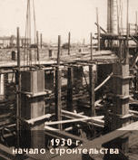
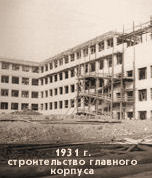
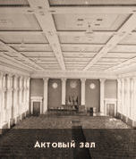

Судьбу XX века вершили инженеры. Благодаря им истекшее столетие вошло в историю как эпоха научно-технического прогресса, новой техники и технологий.

В создание института большой вклад внес его первый директор Е.М. Цалихин. Основанное в 1933 году бюро научно-исследовательских работ организовало и координировало научную деятельность кафедр. В 1936 году в институте было уже 5 профессоров и 16 доцентов. В 1938 году организована аспирантура, которая постепенно расширялась. С 1938 по 1960 год директором Саратовского автодорожного института был профессор И.И. Прокофьев. В 1938 году началась подготовка студентов на автомеханическом факультете по новой специальности «Дорожно-строительные машины и оборудование». К началу 40-х годов институт стал одним из ведущих вузов страны. На его 26 кафедрах работало 12 профессоров, 45 доцентов и 60 научных сотрудников. До 1941 года в нем было подготовлено 1394 инженера. В годы Великой Отечественной войны, продолжая готовить инженеров, институт выполнял научные разработки, имевшие оборонное значение, на его ресурсах функционировала авторемонтная база Юго-Западного фронта, выполнялся проект перевода автомашин на новые виды топлива.
 Периодом интенсивного развития стали для вуза послевоенные годы. Отвечая на запросы машиностроения, приборостроения, энергетики, химической промышленности, институт начал подготовку кадров по новым специальностям: в 1946 году был открыт механико-технологический факультет, в 1947 году — строительный, в 1959 году — приборостроительный, в 1960 — теплоэнергетический (сегодня — энергетический) факультет.
Были открыты вечерние филиалы: в 1955 г. — в Заводском районе Саратова, в 1957 г. — в Балакове. Учитывая тот факт, что институт стал практически многоотраслевым вузом, готовящим специалистов для различных отраслей промышленности, 19 марта 1960 года было принято постановление о преобразовании его в политехнический институт.
 С 1962 по 1988 год ректором политехнического института был доктор технических наук, профессор А.И. Андрющенко. В 1969 году был создан новый факультет — электронной техники и приборостроения, который вел подготовку инженеров по автоматике и телемеханике, гироскопическим приборам и устройствам, электронным приборам, автоматизированным системам управления. В 1988 году ректором института был избран доктор технических наук, профессор В.В. Петров. В результате активной деятельности в институте появились специальности, традиционные для университетов, и 24 декабря 1992 года Саратовский политехнический институт получил статус государственного технического университета.
В 1998 году ректором был избран доктор технических наук, профессор Ю.В. Чеботаревский. В 2008 году Саратовский государственный технический университет возглавил профессор И.Р. Плеве. 8-10 октября 2015 года Саратовский государственный технический университет отметил свое 85-летие.
Сегодня СГТУ представляет собой единый учебно-научно-производственный комплекс, включающий в себя кафедры, институты, учебно-научные и учебно-исследовательские центры, лаборатории. Для проведения занятий вуз располагает современной технической базой. На территории городка технического университета расположены учебные корпуса и общежития. В зданиях корпусов СГТУ размещены аудитории, учебные и научные лаборатории, дисплейные классы, клуб, спортивный зал, библиотека с фондом около 2 млн. экземпляров книг, периодических информационных изданий, в том числе на иностранных языках.
Лучшие выпускники вуза, проявившие особые склонности к научно-исследовательской деятельности, после окончания технического университета поступают в аспирантуру для подготовки кандидатских диссертаций. Завершающим звеном системы подготовки научных кадров высшей квалификации является докторантура СГТУ. Её организация стала возможной во многом благодаря активной научной деятельности профессорско-преподавательского состава университета с самых первых дней его основания и до наших дней.
А тут про якоря